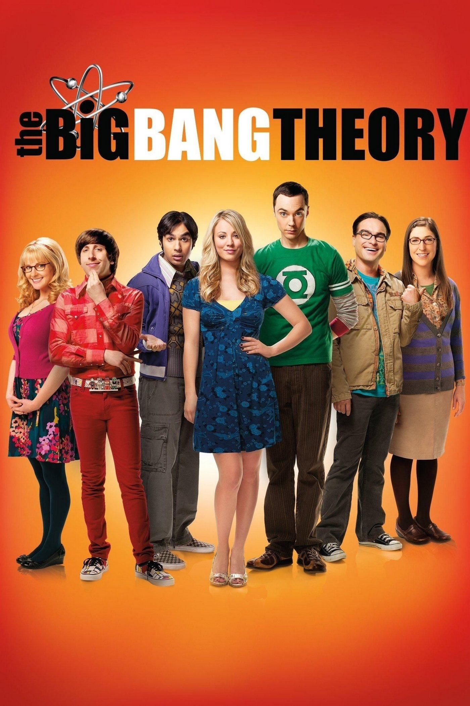
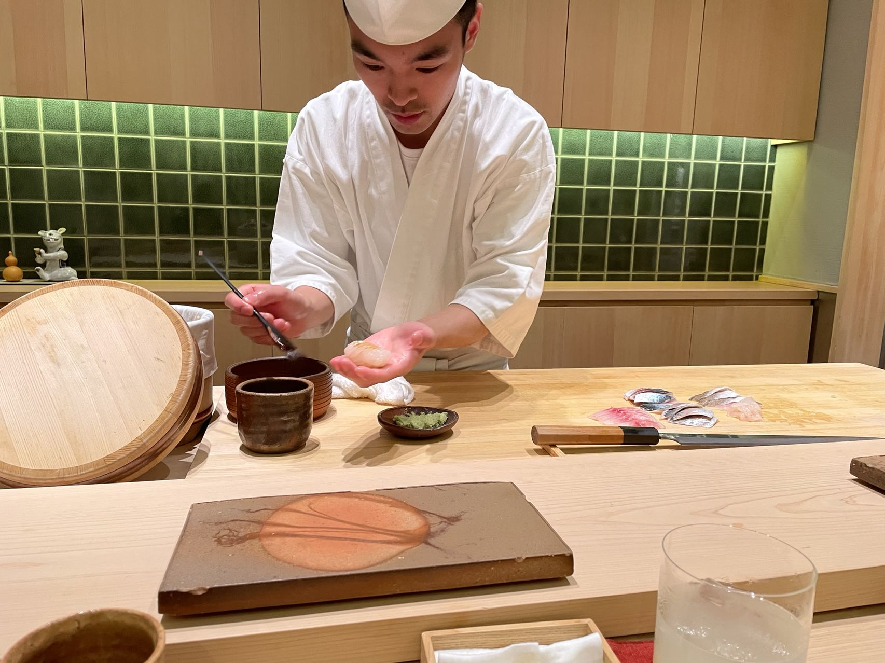
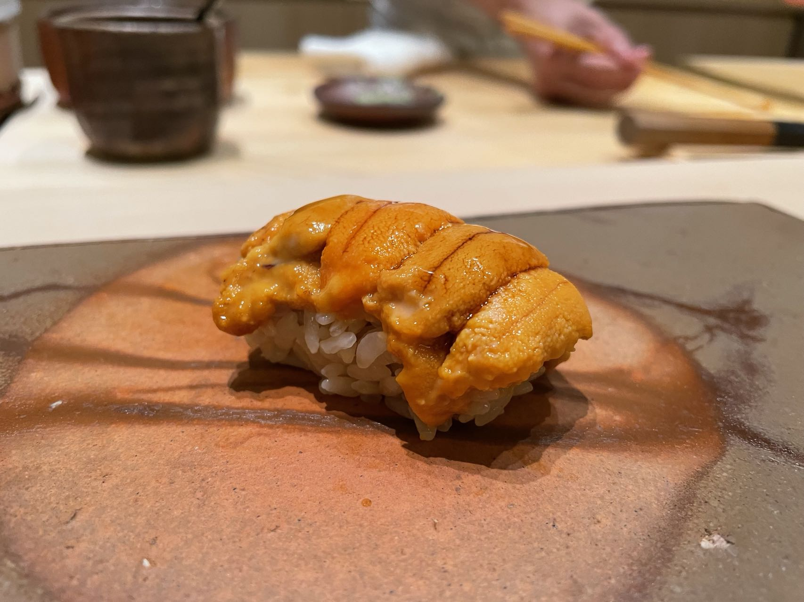
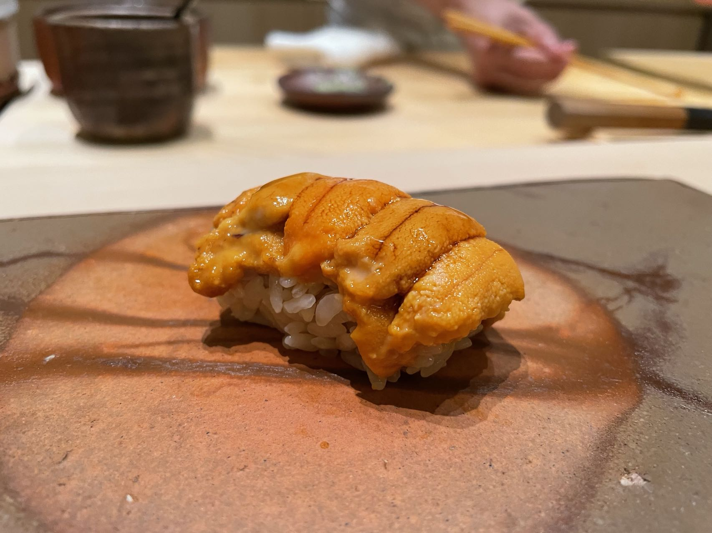

I love watching American TV series. My favorite ones are: the Criminal Minds, the Big Bang Theory and the Star Trek.
I am also a big fan of Japanese food. My favourite restaurant is Bird RYU SHIZUKU in Shanghai. Although the cook is a Chinese, he could make very delicious sushi.
 
